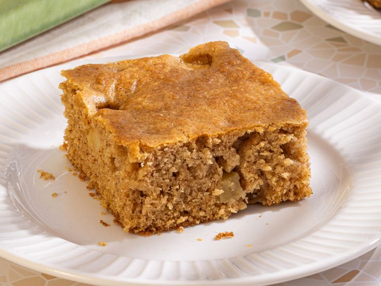
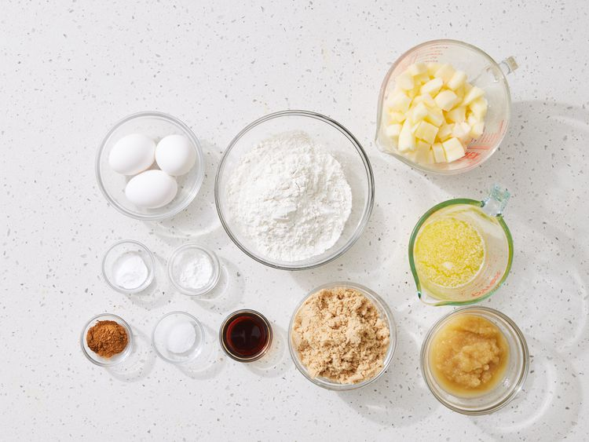
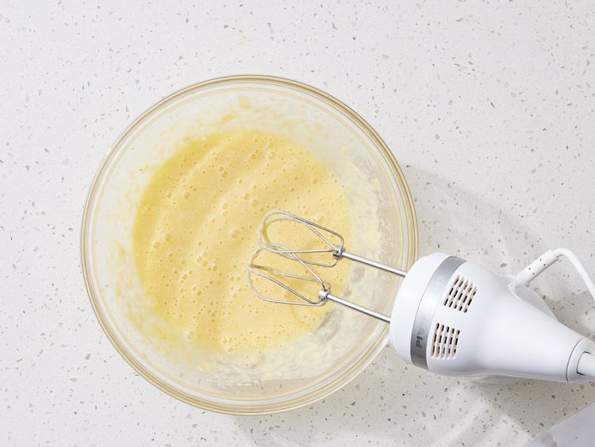
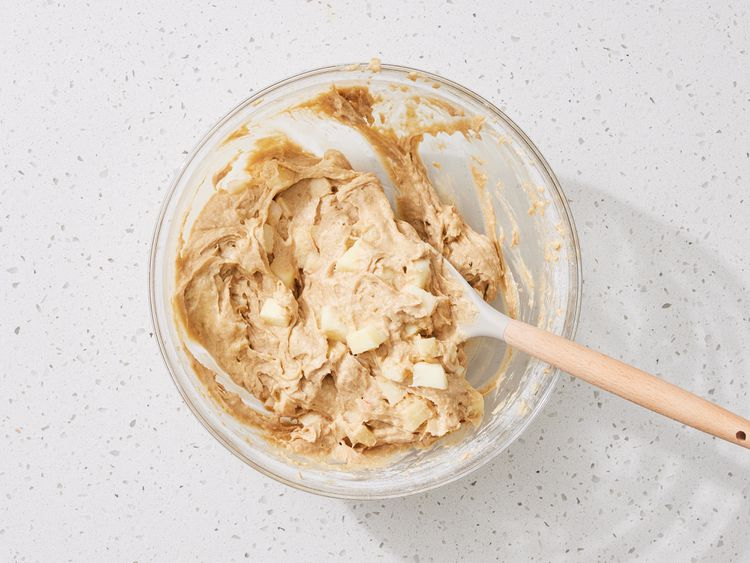
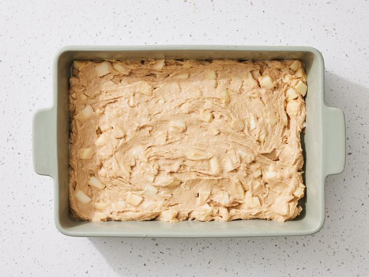
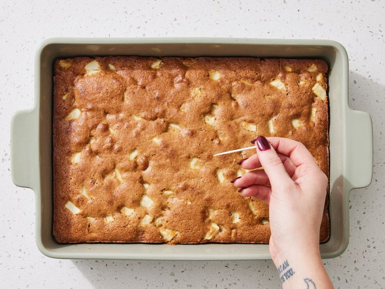

Home
Apple Cake Recipe

Ingredients (for 12 servings):
- ½ cup butter, softened
- ½ cup unsweetened applesauce
- 3 large eggs
- 2 cups all-purpose flour
- 1 cup packed brown sugar
- 2 teaspoons ground cinnamon
- 2 teaspoons vanilla extract
- 1 teaspoon baking powder
- ¾ teaspoon baking soda
- ¾ teaspoon salt
- 3 cups diced apple (about 2 medium apples)
Instructions:
- Gather ingredients. Preheat the oven to 350 degrees F (175 degrees C). Lightly grease and flour a 9x13-inch baking pan.

- Beat butter, applesauce, and eggs together in a large bowl with an electric mixer until foamy.

- Add flour, brown sugar, cinnamon, vanilla, baking powder, baking soda, and salt; mix until well combined. Stir in apples.

- Pour batter into the prepared pan.

- Bake in the preheated oven until a toothpick inserted into the center of cake comes out clean, 25 to 30 minutes. Cool in the pan for 10 minutes.

- Enjoy!